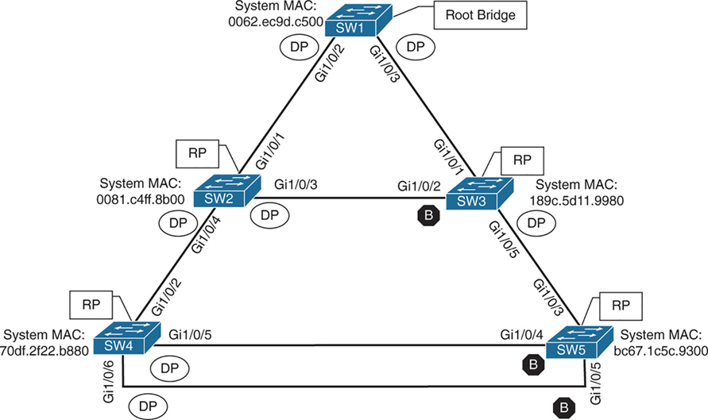

Spanning Tree Protocol (STP) Overview
Spanning Tree Protocol (STP) enables switches to become aware of other switches through the advertisement and receipt of bridge protocol data units (BPDUs). STP builds a Layer 2 loop-free topology in an environment by temporarily blocking traffic on redundant ports. STP operates by selecting a specific switch as the best switch and running a tree-based algorithm to identify which redundant ports should not forward traffic.
STP has multiple iterations:
- 802.1D, which is the original specification
- Per-VLAN Spanning Tree (PVST)
- Per-VLAN Spanning Tree Plus (PVST+)
- 802.1W Rapid Spanning Tree Protocol (RSTP)
- 802.1S Multiple Spanning Tree Protocol (MST)
Catalyst switches now operate in PVST+, RSTP, and MST modes. All three of these modes are backward compatible with 802.1D.

IEEE 802.1D STP
The original version of STP comes from the IEEE 802.1D standards and provides support for ensuring a loop-free topology for one VLAN. This topic is vital to understand as a foundation for Rapid Spanning Tree Protocol (RSTP) and Multiple Spanning Tree Protocol (MST).
802.1D Port States
In 802.1D STP, every port transitions through the following states:
- Disabled: The port is in an administratively off position (that is, shut down).
- Blocking: The switch port is enabled, but the port is not forwarding any traffic to ensure that a loop is not created. The switch does not modify the MAC address table. It can only receive BPDUs from other switches.
- Listening: The switch port has transitioned from a blocking state and can now send or receive BPDUs. It cannot forward any other network traffic. The duration of the state correlates to the STP forwarding time. The next port state is learning.
- Learning: The switch port can now modify the MAC address table with any network traffic that it receives. The switch still does not forward any other network traffic besides BPDUs. The duration of the state correlates to the STP forwarding time. The next port state is forwarding.
- Forwarding: The switch port can forward all network traffic and can update the MAC address table as expected. This is the final state for a switch port to forward network traffic.
- Broken: The switch has detected a configuration or an operational problem on a port that can have major effects. The port discards packets as long as the problem continues to exist.